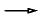

Function names, examples, operating system commands, mathematical symbols, and code fragments are shown in a courier font. Ellipses are used in code examples to indicate missing material.
Throughout the documentation, there are frequent references to "self," which should be understood to mean *this.
The following convention is used to show that class A inherits from class B:
AB
When a class inherits from more than one class, or there are multiple levels of inheritance, all of its inheritance relationships are shown. For example, the following illustration indicates that class A inherits from class B and from class C, which inherits from class D.
 B AC
D
The notation used here is the standard UML arrow.